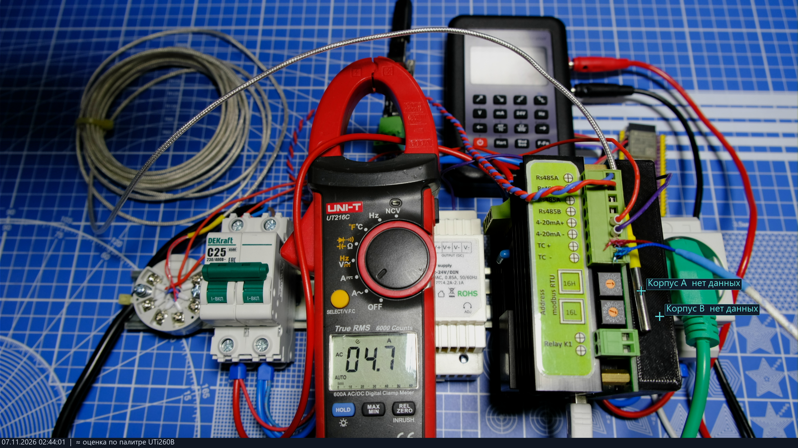
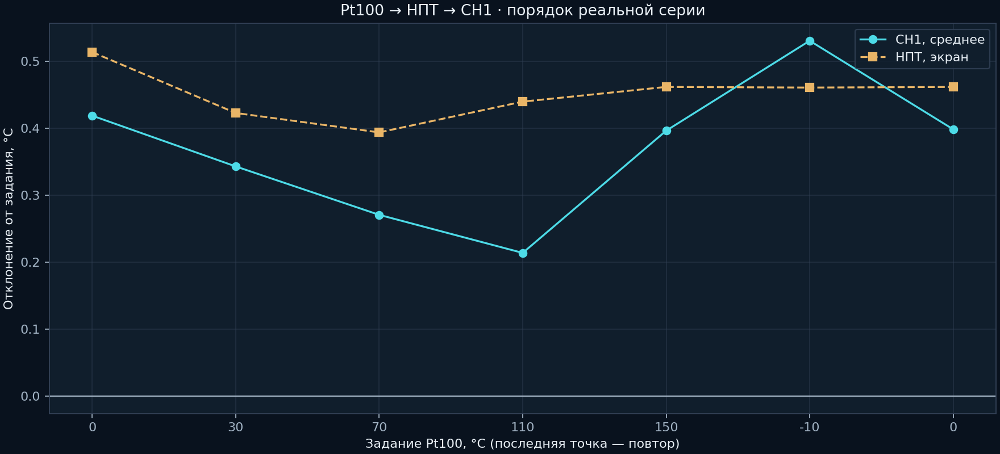
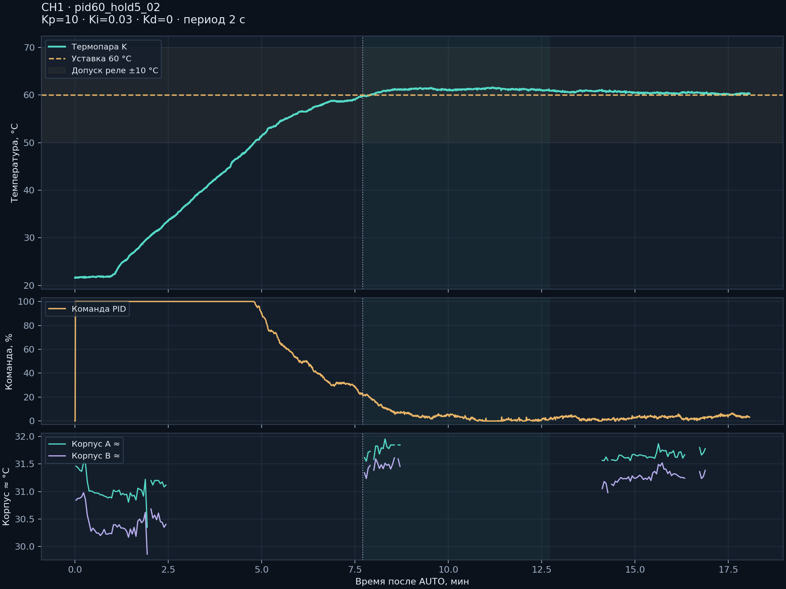
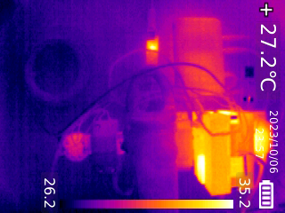

Терморегулятор
PID, ручная мощность, холодный спай, ток RMS, диагностика и сохранение рабочего режима. Автономная работа с последними настройками.
Прошивка и протокол →Одноканальный терморегулятор и инструменты, которыми его исследовали: калибратор, обычная камера, тепловизор и программа управления.
Исходники, аппаратные материалы и измерения в одном воспроизводимом комплекте.

PID, ручная мощность, холодный спай, ток RMS, диагностика и сохранение рабочего режима. Автономная работа с последними настройками.
Прошивка и протокол →Параметры и калибровки, график уставки и температуры, ошибки, функции реле и выдержка прогрева.
Программа управления →Захват экрана прибора и эмуляция его клавиш через отдельный мост. USB и Wi-Fi, локальный интерфейс для автоматизации.
Мост и приложение →Два источника, прозрачное совмещение, перенос температурных отметок, парные снимки и локальный API.
Наблюдение →BIN/HEX, просмотр памяти, резервное чтение, стирание, запись и сравнение всей Flash. Без установщика производителя.
Утилита загрузки →PDF-схемы, спецификации, Gerber, доступная STL-деталь и фотографии. Изменение R17 в испытанной плате описано отдельно.
Аппаратные материалы →Числа получены на одном экземпляре. Исследование сохраняет условия, пропуски и неудачные попытки; оно не подменяет метрологическую поверку.
35 точек для B/E/J/K/N/R/S/T. Затем прямая калибровка токового входа и цепочка Pt100 → НПТ → 4–20 мА. Влияние USB проверяли изменением соединений, не маскировали поправкой.
Термопарный вход →

| Параметр | Первый опыт | Повтор |
|---|---|---|
| Kp / Ki | 2,7 / 0,1 | 10 / 0,03 |
| Пик AUTO | 67,8 °C | 61,6 °C |
| После достижения | 87,5 с | 621,9 с |
Последние 5 минут повтора: 60,0…61,1 °C; последняя минута: 60,0…60,4 °C. Коэффициенты относятся к этой нагрузке.
Полный разбор тока, PID и корпуса →
Температуры произвольной точки UTi260B оценены по палитре. Эвристика меню давала пропуски даже при обычной сцене. Цветная камера иногда перегревалась. Реле ±10 °C не задаёт точность PID. Полная матрица аварий, электрическая изоляция и длительный тепловой режим требуют отдельных испытаний.
Windows x64 и Python 3.12–3.15. Отдельное окружение, выбор собственных портов и камер. Схемы и данные доступны офлайн.
python setup.py python run.py controller python run.py thermal python run.py calibrator python run.py programmerСборка, прошивка и первый пуск →
78 Python-тестов, 54 590 проверок C-ядра, сборки STM32 и ESP32-S3. Скрипты анализа работают по сохранённым журналам и не обращаются к приборам.
Сборка STM32 воспроизвела образ 2.5 побайтно. Аппаратные испытания перечислены отдельно от программных.
Что именно проверено →Комплект исходников. Бинарные зависимости устанавливаются стандартными средствами; личных COM-привязок и переписки нет.
Архитектура, факты с источниками, контрольные суммы и открытые вопросы. Подтверждённое документом отделено от гипотез и неизвестного.